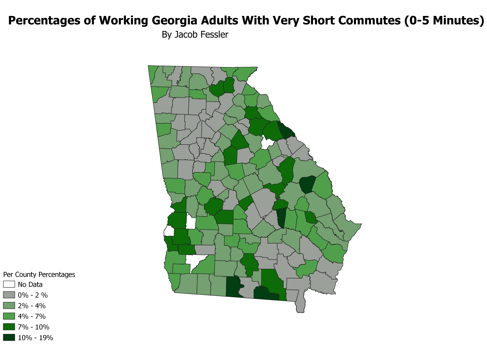

Homework 6: Census data choropleth
Jacob Fessler
For my map, I used data on travel times to work for Georgia adults. The percentages listed in the map are the percent of the population of working (not at home) Georgia adults (here defined age 16+) with a commute time in the range of 0-5 minutes.
EPSG 2239, Georgia East

Data used for this project
CSV dataset
Link to GEOJSON vector data. Zoom out to see vectors.